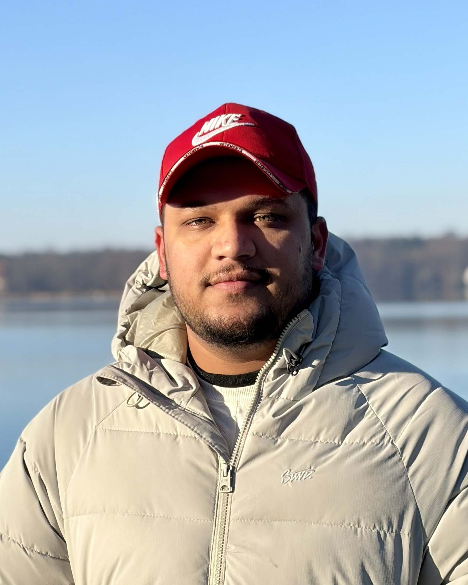

About Me

As a Mechatronics and Mechanical Engineer with over three years of experience, I have a deep passion for high-performance motorsports. My strong mechanical background is driven by a focus on 4-wheeler racing; experiencing a World Endurance Championship (WEC) race firsthand and observing the operations inside the garages was a delight that solidified my ambition to transition into international race engineering and telemetry analysis.
I specialize in bridging the gap between mechanical hardware and advanced software systems, whether that involves validating suspension kinematics or engineering complex sensor data pipelines.
Education
Master of Engineering, Mechatronics and Robotics
Hochschule Schmalkalden
10/2025 - Expected 2027Bachelor of Engineering, Mechanical Engineering
Panjab University
07/2018 - 07/2022Professional Experience
Software Engineer
06/2026 - PresentHSM Aries.space (European Rover Challenge) | Hochschule Schmalkalden
- Developing the autonomous navigation and simulation stack for a competition-ready Mars rover prototype.
- Robotic Modeling: Maintaining and optimizing the rover's URDF for accurate kinematic simulation.
- Perception: Building real-time object detection and dynamic obstacle avoidance pipelines.
- Sensor Fusion: Integrating multi-modal sensor data to ensure reliable state estimation and spatial awareness during dynamic operations.

Perception Lead
11/2025Team HSM Terra (Grasshopper) | Hochschule Schmalkalden
- Collaborated under the project management of Swaraj Tendulkar to engineer a custom, real-time object detection and tracking pipeline in Python.
- Integrated YOLO algorithms and ByteTrack to accurately identify and track specific dynamic targets required for Field Robot Event competition tasks.
- Assembled and integrated electronic systems, performing soldering, crimping, and precision cable routing to connect Arduino microcontrollers, LiDAR, and camera mounts to the robot's main power systems.

Engineer 2 (Design - QC)
09/2022 - 09/2025Pearce Services Global | Mohali, Punjab, India
- Project Planning & Optimization: Streamlined network design workflows and coordinated resource allocation to boost operational efficiency by 20%.
- Schematic Validation: Promoted to NDS Designer to validate deployment schematics and author technical documentation, bridging digital design and physical manufacturing.
- CAD & Spatial Modeling: Built precise digital infrastructure models using advanced CAD tools to accelerate cross-departmental review cycles.
Research Intern
01/2022 - 06/2022TBRL-DRDO Ministry of Defence | Chandigarh, India
- Simulation & Feasibility: Conducted studies on pyro-shock environment simulations to validate testing methodologies for defense applications.
- Custom Machine Design: Optimized schematic design for a custom pyro-shock testing machine, ensuring alignment with dynamic load and safety requirements.
- Risk & Commissioning: Performed risk analysis and secured approval for the fabrication and commissioning of the testing machine.
- Data Validation: Interpreted high-frequency sensor data to confirm the structural integrity of simulated testing environments.
Engineering Intern
07/2021 - 08/2021SML Isuzu Ltd | Punjab, India
- Process Optimization: Enhanced production line efficiency by optimizing Standard Operating Procedures (SOPs) during component trial runs.
- Time Studies: Identified bottlenecks on the tyre sub-assembly line, successfully reducing operational cycle time by 12%.
- Lean Manufacturing: Reorganized workstation layouts using lean principles to minimize material handling time and improve ergonomics.
- Quality Assurance: Collaborated on root cause analysis for defects, proposing mechanical adjustments to minimize manufacturing errors.
Key Projects


Formula Student India, Team Corsa | Vice Captain
08/2018 - 02/2021- Vice-Captain for three seasons; co-led a 25-member team and directed suspension and chassis design.
- Directed suspension geometry and chassis design, validating kinematic models using MSC Adams and Lotus Shark to optimize roll centers and dynamic load transfers.
- Leveraged physical track test data to continuously iterate on suspension setups, utilizing data-driven insights to enhance overall vehicle performance and handling.


Automatic Parking System Prototype
10/2020 - 01/2022- Spearheaded the rapid prototyping and additive manufacturing phase of an automated parking system designed by senior engineering teams.
- Analyzed and optimized complex CAD assemblies utilizing strict Design for Manufacturing (DFM) and Design for Assembly (DFA) principles, selecting appropriate materials and tolerances.
- Managed the end-to-end FDM 3D printing and fabrication process, executing surface finishing and post-processing of printed parts to assemble high-fidelity physical components for the final functional prototype.


Robotic Arm on a Mecanum Wheel Trolley
08/2021 - 12/2021- Engineered a 5-DOF robotic manipulator integrated onto an omnidirectional mecanum wheel base, significantly enhancing the system's navigational range and flexibility.
- Conducted kinematic analysis to define the end-effector workspace and validated payload capacity to ensure static stability during dynamic operations.